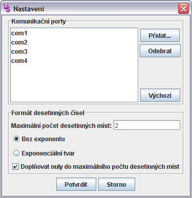

Toto dialogové okno umožňuje nastavit některé vlastnosti, které ovlivní chování celého programu. Například formát desetinných čísel ovlivní zobrazování číselných hodnot v celém programu, nezávisle na otevřeném souboru.
Zde nastavené hodnoty jsou uloženy v domovském adresáři uživatele a nejsou ukládány společně s naměřenými hodnotami.

Seznam názvů portů, které se nabízejí v rozbalovací nabídce. Tato rozbalovací nabídka je v hlavním okně programu a slouží k nastavení procesu načítání.
Přidat... - umožní přidat komunikační port s novým číslem v
rozsahu 1-99. Popis, jak zvolit komunikační port naleznete
zde.Odebrat - odebere ze seznamu označené porty.Výchozí - nastaví seznam portů na výchozí hodnotu.Zde se určuje, jak se mají zobrazovat desetinná čísla v celé aplikaci.
Maximální počet desetinných míst omezuje množství cifer
zobrazených za desetinnou čárkou. Toto nastavení nemá vliv na přesnost
výpočtu, nebo uložení desetinného čísla.Bez exponentu určuje, že se číslo bude zobrazovat v
klasickém tvaru. Například 125.68.Exponenciální tvar určuje, že se čísla budou
zobrazovat v exponenciálním, nebo také vědeckém tvaru, kdy je například číslo
125,68 převedeno na 1,2568*102, což je v programu zobrazeno jako
1.2568e+02.Doplňovat nuly do maximálního počtu desetinných míst
umožňuje nastavit, zda se všechna čísla mají zobrazovat se stejným počtem
desetinných míst. Například číslo 20 by se v případě zaškrtnutí této volby a
za předpokladu, že maximální počet desetinných míst je nastaven na 2,
zobrazilo jako 20.00.